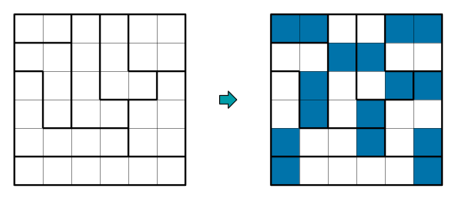

Rapport projet
Pascal Isak & Givre Zolan & Weber Loc
Table of Content
Information et dates.
Dates :
- pr-rapport dcrivant la partie modlisation : 10 mars 2023
- Rapport final + code source 28 avril 2023
Installation
Premirement, il faut installer opam, dune, ocaml et minisat.
https://opam.ocaml.org/doc/Install.html
https://dune.build/install
Deuximement, placez vous dans le dossier norinori/bin/ et assurez-vous que les sous-dossiers INSTANCES/, DIMACS/ et RESULTATS/ existent.
Troisimement, excutez 'dune exec norinori test'
vous pourrez remplacer "test" par le nom d'un fichier qui se trouve dans le dossier INSTANCES/
Ainsi vous pourrez trouver :
- Dans INSTANCES : Les grilles dans le format .liz (format que nous avons cr).
- Dans DIMACS : Les fichiers en .dimacs : la traduction des fichiers .liz dans le format DIMACS.
- Dans RESULTATS :
- Les fichiers .res : la solution trouve par minisat.
- Les fichiers .visu : la grille avec la solution.
Rapport.
Presentation du jeu.
Le jeu que nous avons choisi est NoriNori.

Le jeu commence avec une grille de X cases dans laquelle est pralablement dfini un certain nombre de zones distinctes.
Rgles.
Le but du jeu est de complter la grille en suivant ces 3 rgles:
- Chaque zone doit avoir un total de 2 cases colories.
- Les cases colories sont toujours par pair de 2 indpendament des limites des zones.
- On ne peux pas coller cote a cote deux pairs (mais on peut diagonalement).
Exemples.


Contraintes & Remarques.
Il y a une unique solution si la grille est gnre correctement.
Nous avons remarque plusieurs cas qui permette d'avancer dans la rsolution de la grille :
- Les zones constitues d'exactement deux cases sont toujours a colories elles feront toujours partie de la solution finale.
- Toutes les cases cote cote aux cases colories deviennent donc inutilisable car ne respectent plus la rgle N3
- Toutes les cases seules et entoures par des cases inutilisable deviennent aussi inutilisable.
- Les zones dans lequel il ne reste plus que deux cases peuvent tre colories.
- Ensuite on peut complter les cases colories qui ne sont pas par pair et qui n'ont plus que une seule solution.
Et aprs on peut rutiliser les tapes prcdentes jusqu' ce que notre grille soit complte.
(Attention ces tapes ne sont pas exhaustive, il existe trs probablement des grilles dans lequel appliquer ces tapes ne suffisent pas.)
Traduction du problme en logique.
Premirement nous avons traduit simplement le fait de dire qu'une case est colorie ou non avec tant la taille de la grille.
Formalisation des Rgles 2) et 3)
Rappel :
2) Les cases colories sont toujours par paire de 2 indpendament des limites des zones.
3) On ne peux pas coller cte a cte deux paires (mais on peut diagonalement).
Pour modliser le problme, on commence par fusionner les rgles 2) et 3).
Si une case est colorie, alors elle a une et une seule case colorie cot d'elle.
On va simplifier "alors elle a une et une seule case colorie cot d'elle" en deux rgles.
- Elle a au moins une case colorie a cot d'elle (qui se traduit simplement avec une disjonction)
- Elle a au plus une case colorie a cot d'elle (qui se traduit en logique comme: "elle n'a aucune paire de case adjacente colorie")
la rgle est donc:
on applique
Donc finalement :
Il faut donc appliquer cela pour chaque case.
N'oublions pas le cas spcial des cases au bord de la grille. Deux approches possibles:
- Modifier la rgle des cases du bord pour que la case colori adjacente soit sur le terrain.
- Garder la mme rgle pour les cases au bord et rajouter une ligne de cases autour du terrain.
Nous avons choisis de partir sur la premire options, en ajoutant quelques cas particulier dans le code.
Formalisation Rgle 1)
note: est l'ensemble des cases de la zone z de n lments
Exemple pour comprendre rgle 1)
Soit z une zone de 5 lments {A,B,C,D,E}.
On sait qu'il doit y avoir exactement 2 cases colories dans la zone :
Une stratgie pour modliser cette rgle est de divide et impera :
On spare la rgle "exactement 2" en : Au moins 2 Au plus 2.
(On fait a, car on a essay de directement faire une rgle "exactement 2" mais elle tait beaucoup trop longue)
Au moins 2 :
Au plus 2 :
Cas gnral Rgle 1):
Nous devons maintenant gnraliser la rgle et nous proposons de l'crire comme suit:
Au moins 2
Preuve que cette formule au moins 2 est correct (facultatif)
Preuve que la formule fonctionne :
Supposons qu'il existe et vrai.
on a :
Au plus 2
Modelisation sous forme normale conjonctive.
Donc au final, quand on regroupe toutes nos clauses, on a :
Les programmes.
Formalisation d'un problme dans un fichier.
Nous avons choisis la structure de fichier suivant pour modliser nos grilles :
fichier.lizhauteur(nombre entier positif); largeur(nombre entier positif); nb_zone(nombre entier positif non nulle); numero_zone_case_1_1;..............;numero_zone_case_L_1; ........................................................; ..................numero_zone_case_i_j..................; ........................................................; numero_zone_case_1_H;..............;numero_zone_case_L_H; (Attention les \n ne sont pas obligatoire pour le format du fichier donc on peut tout crire sur une seule ligne.)
Exemple :
ma_grille_nori_nori.liz5; 5; 3; 1;2;3;3;3; 1;2;3;3;3; 1;2;2;2;2; 1;2;2;2;2; 1;1;1;1;1;
ou bien :
ma_grille_nori_nori2.liz5;5;3;1;2;3;3;3;1;2;3;3;3;1;2;2;2;2;1;2;2;2;2;1;1;1;1;1;
Ce qui donne la grille suivante :

Parsing du fichier en Python :
parsing_fichier_liz.pyimport sys #Pour recuperer le nom du fichier a parse. def parsing_fichier(fichier): # On ouvre le fichier f = open(fichier) lines_in_list = f.readlines() f.close() line = "" # On concatene toutes les lignes pour n'en faire que une. for elem in lines_in_list: line += elem c = 0 buffer = "" info_grille = [] nbr_separator_seen = 0 # Parsing des info de la grille info_grille = [largeur, hauteur, nb_zone] while nbr_separator_seen < 3: if line[c] == ';': nbr_separator_seen += 1 info_grille.append(int(buffer)) buffer = "" else: buffer += line[c] c += 1 # On recupere les information de la grille dans des variables largeur = info_grille[0] hauteur = info_grille[1] nb_zones = info_grille[2] #print(info_grille) # On cre une matrice vide de la taille de notre grille matrix = [[0 for y in range(hauteur)] for x in range(largeur)] # On parse le fichier dans la matrice i, j = 0, 0 for c in range(c, len(line)-1): if j == largeur: j = 0 i += 1 if line[c] == ';': matrix[i][j] = int(buffer) buffer = "" j += 1 else: buffer += line[c] #print(matrix) return info_grille,matrix if __name__ == "__main__": info_grille, matrix = parsing_fichier(sys.argv[1]) print(info_grille) print(matrix)
On peut l'xecuter en faisant : python parsing_fichier_liz.py ma_grille.liz
Parsing en Ocaml :
parsing_fichier_liz.mltype largeur = int;; type hauteur = int;; type nb_zones = int;; type case = int*int;; type list_zone = case list list;; type jeu = largeur*hauteur*nb_zones*list_zone;; type etat_automate = Largeur|Hauteur|Zone|Fin|CS of (int*int);; (*CS((x,y),liste_de_collones,colonne)*) type mem_automate = jeu*int*etat_automate;; let print_jeu ((larg, haut, zone, l): jeu) = (* | SPCIFICATION | print_jeu : affiche dans le terminal le jeu. | - Profil: append_n_eme : element -> int -> 'a list list -> 'a list list | - Smantique: (append_n_eme element int ('a list list) ('a list list)) : | - Exemple et proprits: | (a) automate (5) (2) ([[0;1];[3;4];[]]): [[0;1];[3;4];[5]] | (b) automate ('u') (0) ([couco]): [[coucou]] | - Implmentation: *) let p_iteri (index: int) (l: case list) = let () = Printf.printf " %d: [ " (index+1) in let () = (List.iter (fun (x,y) -> Printf.printf "(%d,%d); " x y) l ) in let () = Printf.printf "]\n" in () in let () = Printf.printf "largeur: %d\nhauteur: %d\nnombre de zones: %d\ndictionnaire de zone:\n" larg haut zone in let () = List.iteri p_iteri l in () ;; let rec append_n_eme (element: 'a) (n: int) (pr::fin: 'a list list): 'a list list = (* | SPCIFICATION | append_n_eme : rajoute un lment la n eme liste de la liste de liste donn en argument. | /!\ premier lment d'indice 0. | /!\ la liste de liste donn doir avoir au moins n+1 listes (pour pouvoir incrmenter la n eme liste). | - Profil: append_n_eme : element -> int -> 'a list list -> 'a list list | - Smantique: (append_n_eme element int ('a list list) ('a list list)) : | - Exemple et proprits: | (a) automate (5) (2) ([[0;1];[3;4];[]]): [[0;1];[3;4];[5]] | (b) automate ('u') (0) ([couco]): [[coucou]] | - Implmentation: *) match n with | 0 -> (element::pr)::fin | n -> pr::(append_n_eme element (n-1) fin) [@@warning "-8"] ;; let automate (((larg, haut, zone, gril), nb, etat):mem_automate) (carac:char): mem_automate= (* | SPCIFICATION | automate : a utiliser dans un String.fold_left, parse le fichier. | - Profil: automate : mem_automate -> char -> mem_automate | - Smantique: (automate mem_automate char mem_automate) : la fonction modifie mem_automate en fontion du caractere donnee et de son etat. | - Exemple et proprits: | (a) automate ((0, 0, 0, []), 15, Largeur) (';'): ((15, 0, 0, []), 0, Hauteur) | (b) automate ((15, 0, 0, []), 2, Hauteur) ('4'): ((15, 0, 0, []), 24, Hauteur) | - Implmentation: *) match carac,etat with | ';',Largeur -> ((nb(*<- enregistre la largeur ici*), haut, zone, gril), 0, Hauteur) | ';',Hauteur -> ((larg, nb, zone, gril), 0, Zone) | ';',Zone -> ((larg, haut, nb, List.init nb (fun x -> [])), 0, CS(1,1)) | _ ,Fin -> ((larg, haut, zone, gril), 0, Fin) | ';',CS((x,y)) -> if (x == larg) then if (y == haut) then ((larg, haut, zone, (append_n_eme (x,y) (nb-1) gril)), 0, Fin) else ((larg, haut, zone, (append_n_eme (x,y) (nb-1) gril)), 0, CS(1,y+1)) else ((larg, haut, zone, (append_n_eme (x,y) (nb-1) gril)), 0, CS(x+1,y)) | a,etat -> (*etat!=Fin*) if (((Char.code a) >= 48) && ((Char.code a) <= 57)) then ((larg, haut, zone, gril), nb*10 + (Char.code a) - 48 (*ascii(48) = '0'*) , etat) else ((larg, haut, zone, gril), nb, etat) (* si le carac n'est pas reconus en tant que chiffre, on le passe*) ;; let lire_fichier (file: string) : jeu = (* | SPCIFICATION | automate : permet douvrir un fichier, de le parser et retourner le jeu corespondant. | - Profil: automate : string -> jeu | - Smantique: (lire_fichier string) : rcupre toutes les lignes puis applique un String.fold_left avec l'automate et retourne le jeu renvoy. | - Implmentation: *) let lines_array = Array.to_list (Arg.read_arg file) in (*on recupere les lignes*) let lines = String.concat "" lines_array in (*on concatene toutes les lignes*) let (mon_jeu, _, _) = (String.fold_left (automate) ((((0,0,0,[]): jeu), 0, Largeur):mem_automate) lines ) in (*on parse*) mon_jeu (*return*) ;; let file:string = ( if (Array.length Sys.argv == 2) then Sys.argv.(1) (*le fichier est donn en argument*) else "test.liz");; (*nom de fichier pas defaut*) let mon_jeu = lire_fichier file;; (* on parse le fichier *) print_jeu mon_jeu;; (*affichage de jeu*)
Pour la suite du projet, nous avons choisis de continuer en Ocaml.
Formalisation d'une entre en logique propositionnelle.
Maintenant que nous avons une matrice en Python ou bien un dictionnaire en Ocaml reprsentant notre instance, nous devons la transforme en forme de logique propositionnelle.
Rgle 1)
Nous avons ralis une fonction rcursive "dimacs_case_de_colonnes" qui s'occupe de parcourir une colonnes et d'appliquer la rgle 1 sur chaque case de la colonne.
Elle est appele par "dimacs_colonnes"
Rgle 2) & 3)
Pour la rgle 2 on appelle la fonction au_plus_2 et la fonction qui utilise l'itrateur.
Conversion d'une instance au format DIMACS.
Pour convertir dans le fichier DIMACS, on fait simplement des Printf.fprintf dans le fichier .dimacs en mme temps que notre formalisation.
Afficheur de solution.
Notre afficheur de solution se trouve dans le fichier visuel_resultat.ml il prend un fichier .res donne par minisat et va afficher un tableau dans lequel il va mettre des . pour des cases vide et des # pour des cases colories.
Programme principale qui utilise les autre progs.
Notre programme principale est main.ml il commence par rcuprer les arguments puis cre les futures noms des fichiers .res, .dimacs et .visu ensuite il fait la formalisation et la transformation en DIMACS par la mme occasion, aprs a, il lance minisat avec le fichier .dimacs et enfin il utilise la solution de minisat pour crer le fichier .visu.
Les instances tests.
instance basique problme simplifie.
grille_simple.liz6;6;8; 1;1;2;2;2;3; 1;1;1;1;2;3; 4;1;1;1;5;5; 4;1;1;6;6;5; 1;1;6;6;6;6; 8;8;6;7;7;7;
Reprsente une grille basique de 6 par 6 avec 8 zones.
instance normal avec tout les cas de figure.
semi_grosse_grille.liz10;10;20; 1;1;1;2;3;3;3;4;5;5; 6;1;2;2;2;3;3;4;5;5; 6;7;7;2;2;2;8;8;8;5; 6;9;9;9;2;10;10;8;5;5; 6;9;11;2;2;10;12;5;5;12; 11;11;11;11;11;11;12;12;12;12; 13;13;11;11;15;15;16;16;17;17; 13;13;13;11;15;18;16;16;19;17; 13;13;20;20;15;18;19;19;19;19; 13;13;20;20;15;15;19;19;19;19;
Reprsente une grille plus complexe avec tous les cas de figures que nous avons observ.
instances problmatique avec cas de figure critiques.
grille_1_case.liz1;1;1;1
Reprsente une grille de une seule case, qui est cens ne pas avoir de solutions.
grille_2_cases.liz2;1;1;1;1
Une grille avec deux cases, soit une seule solution unique.
instance avec un nombre de clause norme.
grille_immense_mais_simple.liz25;25;1; 1;1;1;1;..........;1; . . . . . . 1;1;1;1;..........;1;
On essaye avec une trs grosse grille pour voir si notre systme est capable de rsoudre malgr un nombre de clause norme (40 millions).
Soutenance.
A faire ...